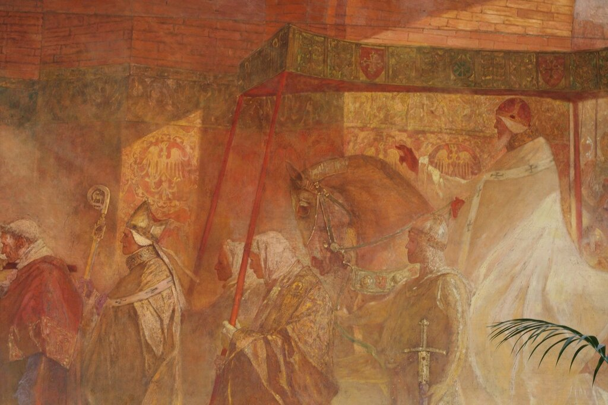
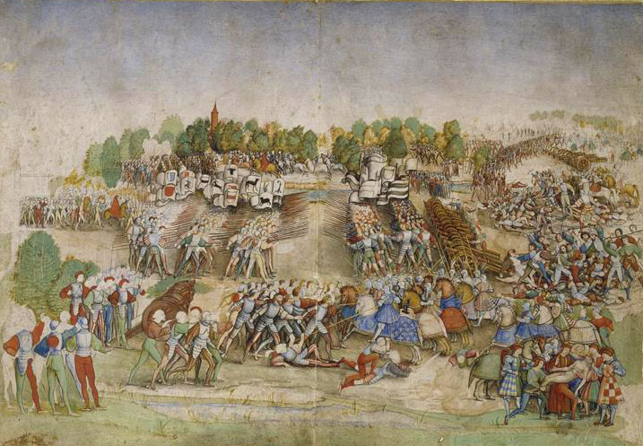
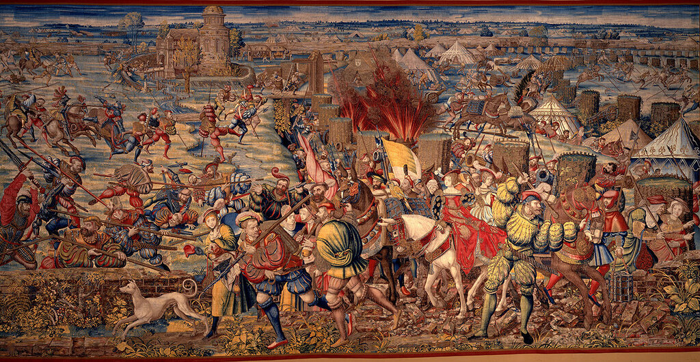
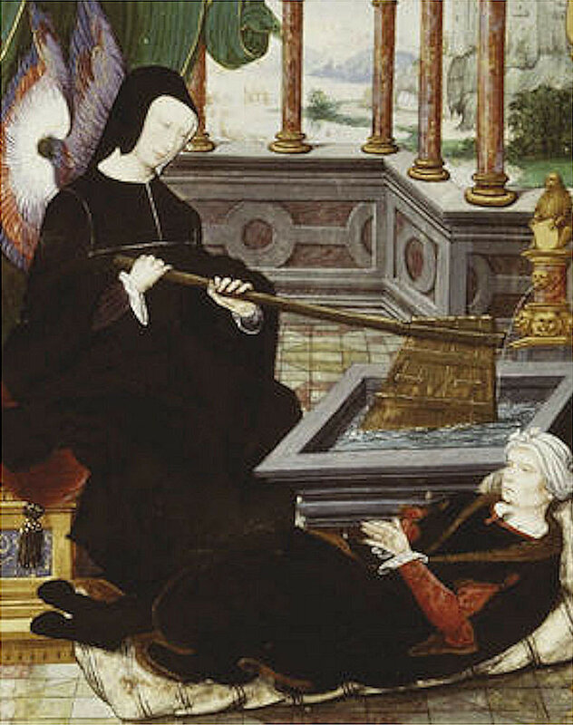
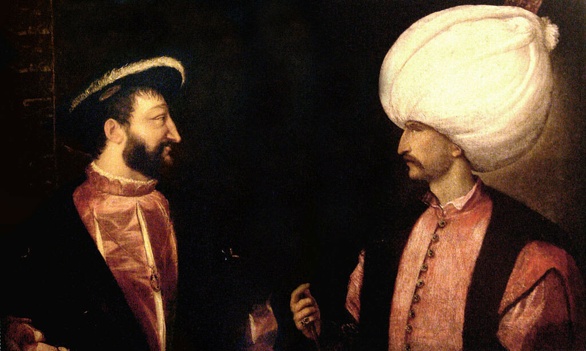

Капитуляции, или против кого дружили Франция и Турция
Он сам дружит султану,
Как твоему, как нашему врагу!
А. К. Толстой. Царь Борис
Прежде чем перейти к характеристике военно-политической обстановки в Восточном Средиземноморье в XVI-XVII веках, скажем несколько слов о том, что представлял собой основной экономический инструмент, который регулировал отношения мусульманской Турции с христианской Европой. Поговорим о режиме капитуляций.
Капитуляция (от латинского caput – глава) –договор или одностороннее обязательство, в соответствии с которым суверенное государство уступает юрисдикцию над объектами иностранной державы внутри своих границ. В результате иностранные субъекты получают своего рода иммунитет от судебных и других государственных институтов на территории страны, предоставляющей такие капитуляции. Считается, что в истории Османской империи первые капитуляции были предоставлены французам в фирмане султана Сулеймана в 1535 году. Как и почему это произошло?
Если посмотреть на историю франко-мусульманских отношений, то появится соблазн рассматривать французов зачинщиками и предводителями антимусульманских походов, начиная с битвы при Туре 732 года, когда франки под командованием Карла Мартелла разгромили армию Омейядского Халифата и остановили продвижение арабов на север. Далее следовали крестовые походы, организаторами и идейными вдохновителями которых, начиная с папы Урбана II, выступали в основном французы.

Вход папы Урбана II в Тулузу. Художник Benjamin Constant (1845-1902), Капитоль де Тулуз.
Практически во всех последовавших за тем других крестовых походах основными руководителями и участниками были также французы. И христианские военно-монашеские ордена Тамплиеров и Иоаннитов по преимуществу состояли из французов. Активные военные действия французские монархи вели и против Османской империи, достаточно вспомнить эпоху Людовика IX, Карла VIII и Людовика XII. Недаром за французскими королями закрепился титул le Roi Très Chrêtien.
Король Франциск I (1494 —1547) не нарушал установившейся традиции. После своей блистательной победы при Мариньяно (1515)

Сражение при Мариньяно (?) Maître à la Ratière (XVI век). Musée Condé
Франциск неоднократно заявлял о готовности Франции замириться со своими европейскими соперниками и объединить силы против общего врага. Идея нового крестового похода всецело завладела им, король детально обсуждал ее с папой Львом X. Но борьба за пост Императора Священной римской империи, после смерти Максимилиана в 1519 году, поссорила Франциска с габсбургским домом, представитель которого Карл V был избран на этот пост. Начались бесконечные войны между Францией и Габсбургами. В 1525 году в сражении при Павии Франциск был дважды ранен и попал в плен.

Битва при Павии. Пленение Франциска I. Гобелен. Автор Bernard van Orley. Между 1528 и1531. National Museum of Capodimonte, Galleria Napoletana, Неаполь
Франции грозила полная катастрофа, и тут плененный король решил обратиться за помощью к султану Османской империи Сулейману Великолепному. Все контакты осуществлялись в строжайшей тайне, такой, что и до сих пор мы мало что знаем о них. Если бы ни болтливость Великого визиря, мы, возможно, и вообще ничего не знали бы о первой попытке установить связь королевского семейства Франции с османским султаном. Всей операцией руководила королева-мать Луиза Савойская (Cherchez la femme!), ставшая регентшей Франции после пленения короля.

Луиза Савойская, держащая в руках символический руль и обращающаяся за помощью к султану Сулейману, возлежащему у ее ног.
Она направила в Порту делегацию в составе 12 человек со своим письмом и богатыми дарами султану. Но по пути посольство было перехвачено и перебито в Боснии местным санджак-беем. Роджер Мерриман, автор книги о Сулеймане Великолепном (1944), полагает, что причастным к этому злодеянию были Габсбурги, давно имевшие в Боснии свои интересы. Как бы то ни было, но миссия не достигла цели. Луиза не впала в отчаяние и направила в Константинополь второе посольство под руководством Жана Франжипани, который сумел доставить Сулейману спрятанное в подошве своих ботинок письмо от Луизы. Считается, что письмо было написано самим Франциском, хотя до сих пор оно не найдено. Зато известен ответ Сулеймана, который он передал с тем же Франжипани. Текст письма Сулеймана от февраля 1526 года с переводом его на французский язык приведен в сборнике Шаррьера (Charrière, Ernest. Négociations de la France dans le Levant, ou Correspondances, 1848, т.I, с. 116-118), а перевод на английский можно найти у Р.Мерримана (1944).

Франциск I и Сулейман. Монтаж двух портретов Тициана. Ок. 1530 .
Текст письма турецкого султана королю Франции был выдержан в крайне доброжелательном тоне, но не содержал никаких конкретных обязательств со стороны османов. Султан не любил доверять государственные секреты пергаменту, предпочитая договариваться обо всем устно. Именно следствием таких договоренностей стал франко-османский тайный договор 1528 года.
Как развивались события дальше, узнаем в следующий раз.